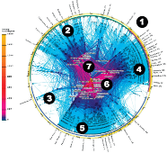

The Network Is
Yet Another Happy Birthday Intertubes!! Today marks 40 years of the internet, although there's some debate as to the actual date. I consider myself a latecomer: I didn't get my first real internet email address until 1977, C410JG40@CMUA. I was "jag" on various Unix systems before then, but it wasn't until 1977 that the ARPAnet and email really took over my life. I soon realized that the only real-world friendships I kept up with were folks that I could send email to. I disappeared from my brother and sister's lives until they got email addresses 20 years later. Of course now it's gotten to the point where restaurants don't exist unless they're on OpenTable :-) I wrote the original Unix Emacs in 1978 and because of that by sometime in 1980 I had the unusual distinction of having login IDs on every non-military host on the ARPAnet (I kept track - it had become sport).When I joined Sun in 1984 (yikes! Has it been that long?) one of the big attractions was Sun's position on networking: every machine had a network connection. At the time, that was considered pretty weird. I had known Bill and Andy for years. They had both tried to get me to join Sun at the beginning in 82, but I foolishly didn't. "The Network is the Computer" was a pretty odd tagline at the time, and it didn't make sense to most people, but it had geeky appeal. A lot could be done when you tied machines together: from harnessing the compute power of clusters of machines, accessing filesystems remotely via NFS, remote graphics access, and a whole lot more.
But the network had more than mere geek appeal for me. It felt important in a world-changing kind of way. This crystalized when I read Robert Axelrod's 1984 book The Evolution of Cooperation. This is a reasonably accessible game theory book that discusses experiments involving the Prisoners Dilemma. I won't repeat what you can find by reading the Wikipedia article (which I urge you to do; read the book too). But by the end of the book, there is a strong conclusion that as the frequency of interaction increases, the optimal strategy shifts from hostility to cooperation. This really appealed to my 60's peacenik leanings because it suggested that all you needed to do was to get people communicating, and inevitably peace would break out. It doesn't matter much the form the communication takes, all is good.
At that point in my life, the network went from a geeky toy to a moral good. I don't know how to express how thrilled I am at how it has all played out. From the effects of the network in keeping the news flowing during the 1991 Soviet coup d'état attempt, to FaceBook, Twitter, Blogging and all of todays social media.
These days I think that Sun should shorten its tagline from "The Network is the Computer" to simply "The Network Is".
My biggest disappointment with the internet is that it seems that the "killer app" that makes the economics of the Internet work is advertising...
| October 29, 2009 |